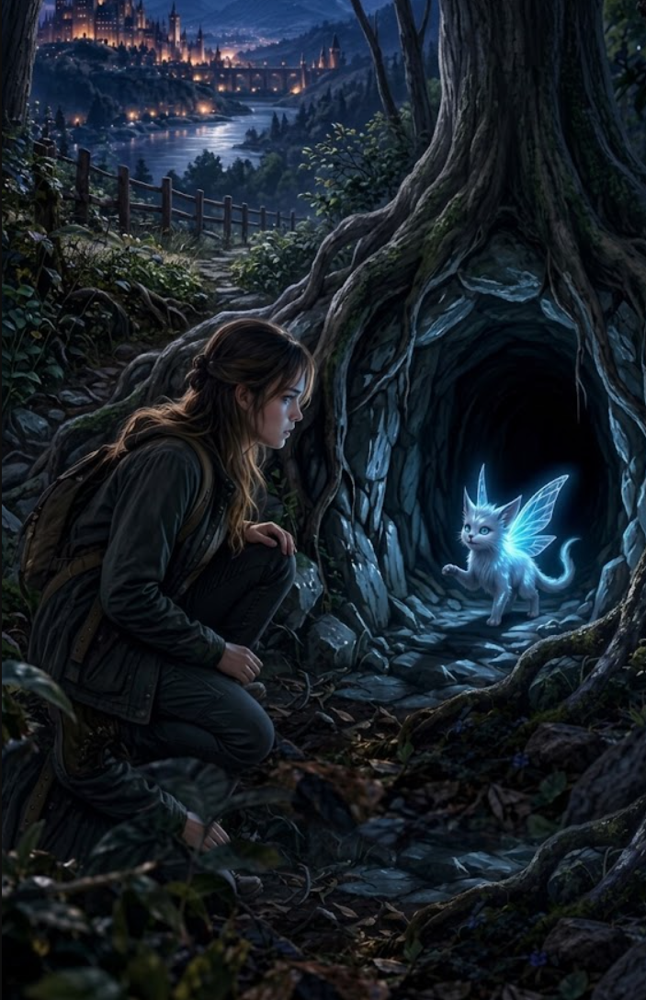

2/3
Camino actual: El Camino Oculto
🔊 Narración:
Ayla cura a la pequeña criatura. Agradecida, esta emite un tenue brillo azul y aparta unas gruesas raíces mágicas, revelando un pasadizo subterráneo.
La criatura camina hacia la oscuridad y voltea, invitando a Ayla a seguirla. Sin embargo, el túnel parece muy peligroso.
♦ ───── ♦